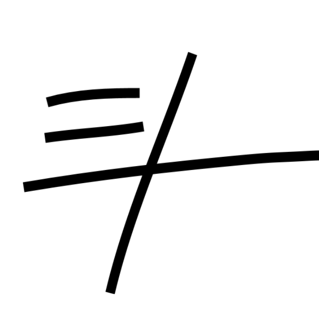

go back
uses of a brick
As a piece of chalk. As a bit counter. In combination with superglue, a way to block a road quickly. To build a house. To use as a demonstration for a clay kiln. To demonstrate entropy. As the centerpiece of brick roulette. To evoke a noir novel. In combination with trendy lighting, convince people to pay $15 for rice bowls. To make fun of brownstone houses. To split open a pipe. To create a water-catcher. To create a hole for ice-fishing. To throw out of an airplane. To use as ballast in a submarine. To use as a waymarker for civilization . To start an avalanche. To demonstrate martial art skills. To go brick-fishing. To practice graffiti on . To make a backpack heavier for endurance training. To stress-test a drone. To gain traction under a stuck car. To hunt rabbits in the desert. To calibrate a jackhammer. To test rocket payload. as a short time-dating method (the brick will dissolve in 100 years (?). To stir up media and public outrage. To break a window. To sharpen a knife. To decoy a x-ray scanner as a drug brick carrier. To see how deep a well is. To use as the null-hypothesis for rock skippiness. To hide valuables behind a painting. To hide a key in a garden. To break a computer. To reinforce a doorstop. To raise the level of water for drinking from a really tall glass. To smooth out your nails . To scare away a flock of crows. To build a garden pathway. To stress-test a baseball bat. To use as a key stone in an arch. To use as a first-point-of-failure in a geological survey. To play a practical joke on archaeologists. To play a practical joke on architects. To play a practical joke on clueless cognitive test-takers. To act as a centerpiece among highly cultured coffee table items. As a demonstration of the value-add theory of capitalism. As a symbol of worker's rights. As a bench for a frog. As a symbol of anti-intellectualism. As a makeshift rock-climbing grip. Buried in the sand as a deterrent against miniature ships. Buried in the sand, as a way to track the tides. Buried 20 miles deep, as a way to track geological changes /and /or a volcanic eruption. To make people pay more attention to a "careful, raised step!" area. Combined with a speedometer, as a Voight-Kampff test, but for gorillas, not androids (gorillas can't throw at speeds >20mph, unlike humans). Actually probably neither can androids. Hopefully. As a movie prop. As a density test for liquids. Tied to ankles to hide evidence of a murder. As a way to measure a building by brick length. As a way to surreptitiously block a surveillance camera. As a way to break open coconuts . As a way to shatter vending machines. As a percussion instrument. As a cooling block in extreme heat waves. As a directional marker . to dent the water bottles of people you don't like. as a way to prove that the earth isn't flat. As a way to throw the end of a rope across a raging river. As a way to secure a bear bag and hoist it up a tree branch. To scratch the glass of highly sensitive scientific instruments. an easily obtainable hardness scale for different minerals. To easily appear purposeful and hard at work. Thrown loosely on the ground, to give visitors a sense of unease about a place. Tom Sawyer (wow, I sure love bricklaying). To calibrate a regular scale. To use as a "household objects" reference for demonstrating the scale of the solar system. To play brick Jenga. To balance enigmatically on the head of a statue. On its short side, to represent a person in a crude diorama. To disable the controls for the nuclear football. To smooth a freshly torn sheet of paper against. To wedge in a hole. To blunt a hatchet. In the trunk of a car to waste fuel economy. To trick people into thinking there are secret compartments in the doors of a refurbished car. To trick international drug dealers for a very short amount of time. To use as an addiction substitute for cell phones from the 1980s. To crush insects with. To act as insulation. To use as lining for a grill pit. To block up a chimney. To cook an egg on in hot weather.
